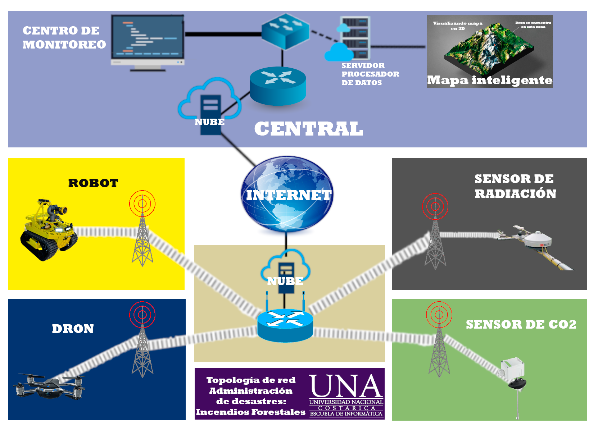

Topología de Red: Administración de desastres - Incendios forestales

Metodología del diseño
Para el proyecto se definieron cinco variables para brindar una solución más óptima para
determinar a tiempo los incendios forestales, las variables son:
1- Robot
2- Dron
3- Sensor de CO2
4- Sensor de radiación
5 - Mapas inteligentes